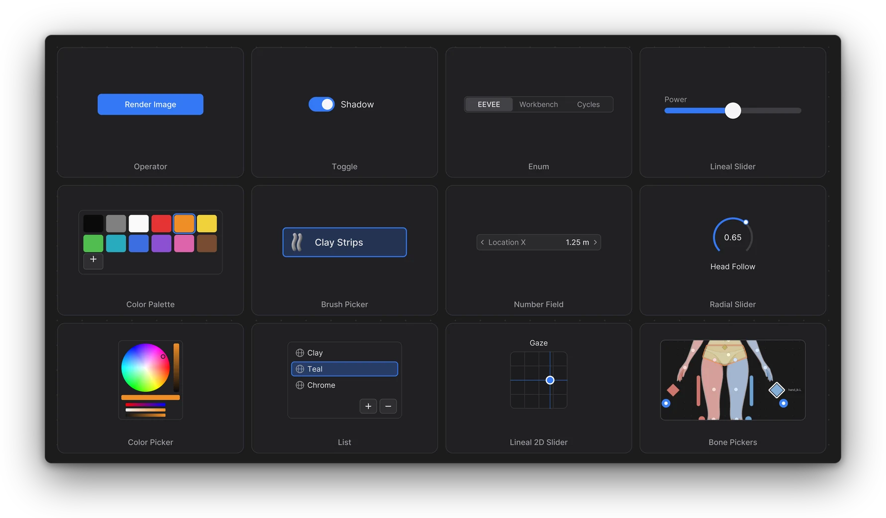

Documentation · v1.4.0 · Blender 5.3+
Learn FlexSpace
Build your own control panels and rig pickers in Blender. Start with three steps, then go as deep as you like: widgets, binding, layers, the Armature Picker and every key.

Basics
Make a canvas, add widgets, lay them out and bind them to anything in Blender.
01Getting StartedWhat a canvas is, three steps to your first working widget, a quick first picker, and where to go next.02The CanvasThe two kinds of canvas, how to create one, Edit Mode and Live Mode, moving around, layers and modes, the canvas top bar, global presets, the Library, and the add-on preferences.03WidgetsEvery widget at a glance, the quickest way to add one (From Property), and the settings of each widget.04Color & Brush WidgetsHow to edit a colour on the canvas (Color Picker), pick from a set of colours (Color Palette), switch brushes with one click (Brush Picker), and put brushes, toggles and operators in a ring (Ring Menu).05Editing ToolsHow to select, move, resize and rotate widgets, snap them, group and frame them, align them with the Selection Bar, use the minimap, and pick a theme.06Binding PropertiesWhat a data path is, the eyedropper, following the active object or pinning one, Copy Full Data Path, broken bindings, showing or disabling a widget with a property, units, and keying bound widgets.
Armature Picker
A canvas of buttons that select the bones of your rig, saved with the armature.
07The Armature PickerWhat a picker is, how to make one, how to pose with it, and how to build and mirror its layout.08Picker with RigifyThe one-step Humanoid Body picker, toes for Rigify, and a step by step guide to your own picker: import, mirror, IK/FK, bone collections, sliders and repairing bindings.
Going further
Step-by-step studios, the demo files, every key, and what to do when something is off.
09RecipesStep-by-step setups for a canvas that follows Blender's mode, layer by layer, and a Rigify body picker. Each recipe shows the result, what you need, the steps, and the demo file that has it finished.10Demo FilesThe demo files that come with FlexSpace, how to open one, and why your own file stays safe.11ShortcutsEvery key of the canvas, grouped by mode: everywhere, Edit Mode, while moving or resizing, Live Mode and the minimap.12TroubleshootingCommon problems, each with its cause and fix, and how to report a bug.